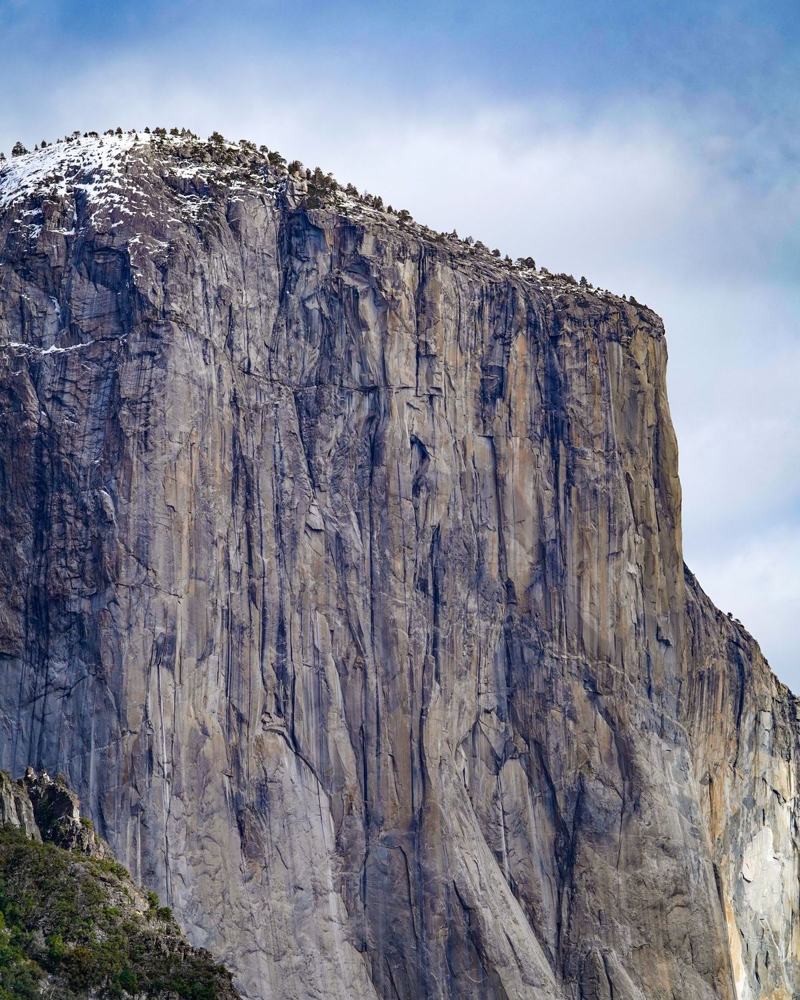
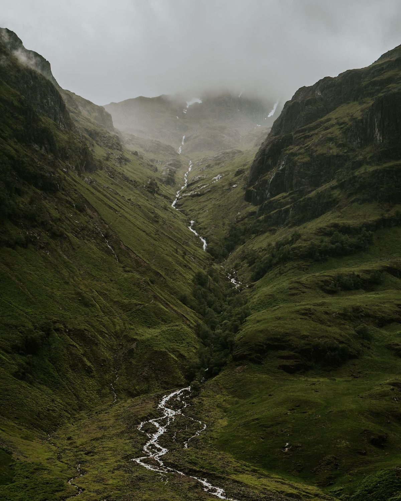
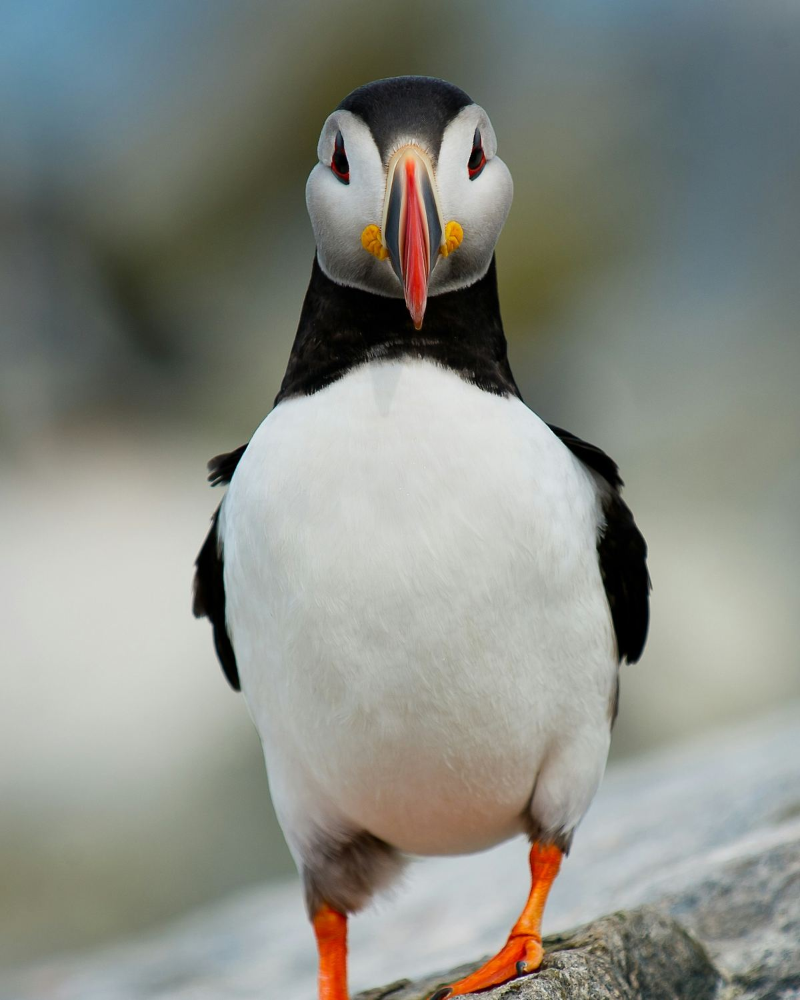
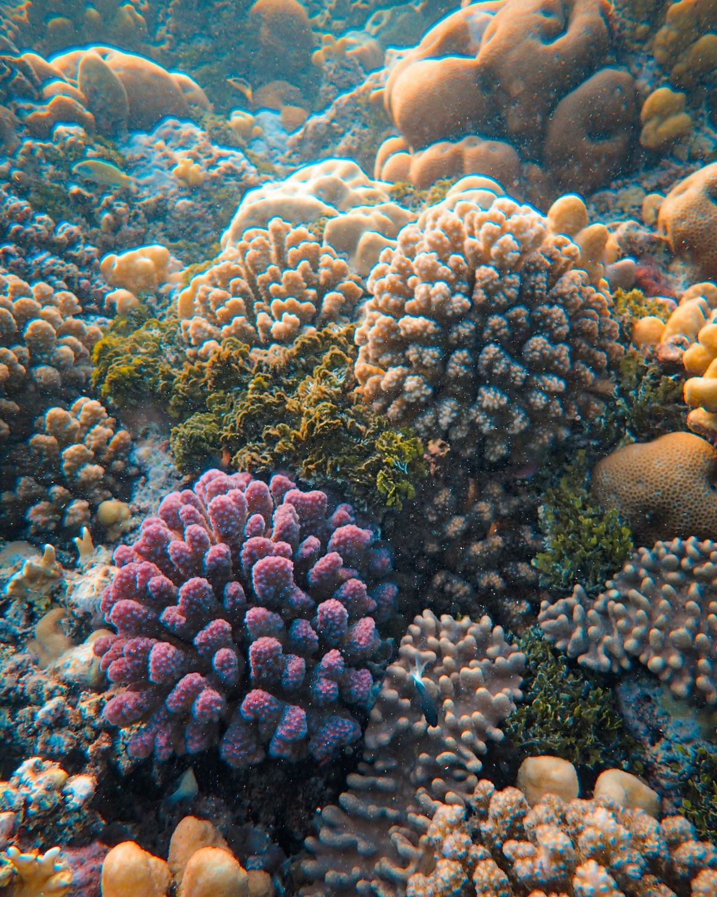
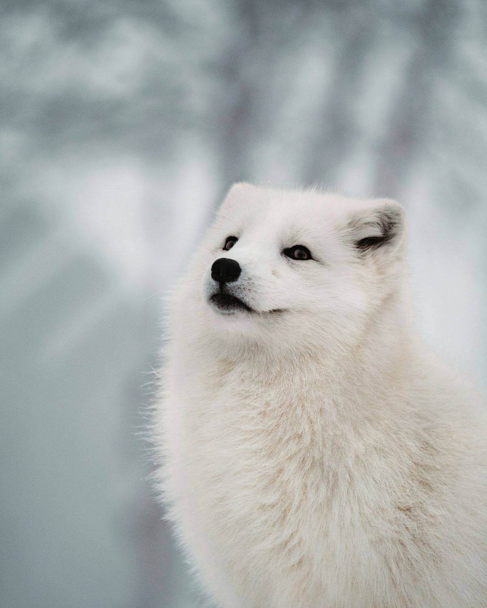
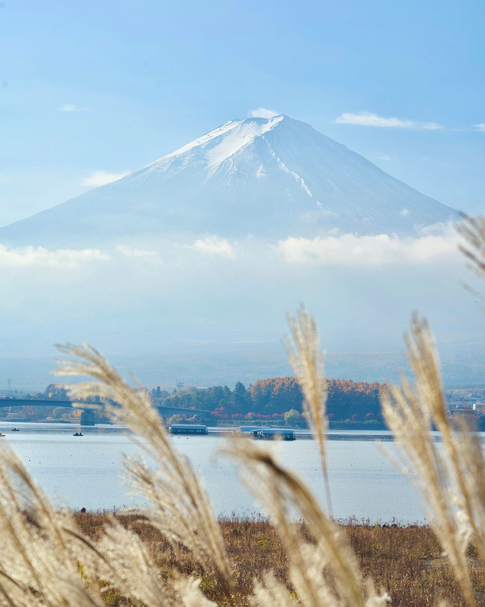
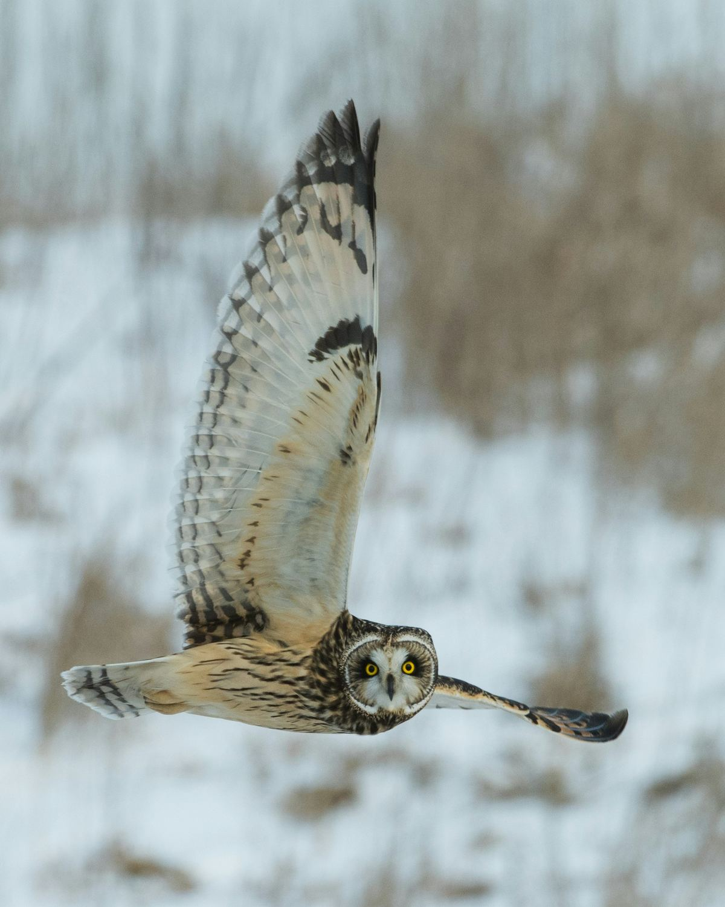

[Two-line summary of the featured article.]
Read the story
PlacesWhy Scotland’s Highlands were once joined to AmericaRead the story
WildlifeThe puffin’s beak glows under UV light. Here’s whyRead the story
OceansThe largest living structure on Earth, explainedRead the story
WildlifeHow the Arctic fox changes its coat with the seasonsRead the story
PlacesMount Fuji: the postcard that is still an active volcanoRead the story
Featured photographers[Interview with a featured photographer]Read the story